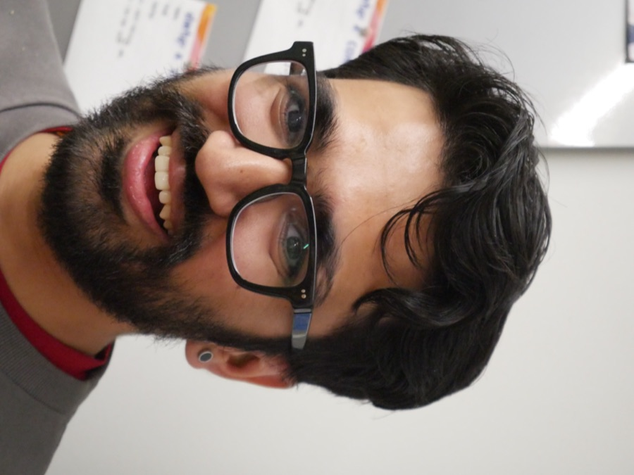

The lab, so far
MOCHA Lab is brand new — right now it's just the PI, with room to grow.

Dr. Saugat Pandey
Principal Investigator · Assistant Professor, Computer Science
Starting at Furman — Fall 2026Saugat's research sits at the intersection of data visualization, perception, and AI — measuring how people read charts, how much they trust what they see, and how humans and AI systems can reason about visual data together. He earned his PhD from Washington University in St. Louis at the VIBE Lab (Visual Interface and Behavior Exploration Lab), under the supervision of Dr. Alvitta Ottley.
Working together right now
More to come
The roster is just getting started. I'm actively recruiting undergraduate researchers, and always happy to hear from collaborators interested in visualization, perception, human-AI interaction, AI/LLMs, and understanding how machines think.
Undergraduate Researchers
Actively recruiting for Fall 2026. If you're interested in working with me, email me with the subject line "Interested in brewing together at MOCHA lab."
Collaborators
Faculty and practitioners exploring visualization, AI, or accessibility — let's talk.